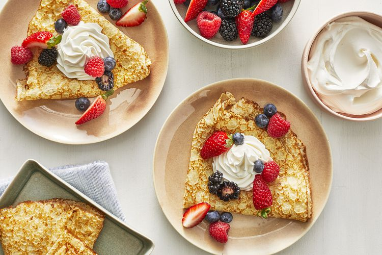

Crepes Recipe

Description
Crêpes are very thin pancakes. They can be served with a wide variety of sweet and savory fillings and toppings. The breakfast staple dates back to at least 13th-century France.
Ingredients
- Flour
- Eggs
- Milk
- Water
- Salt
- Butter
Steps
- Whisk the flour and eggs.
- Gradually add the milk and water.
- Scoop the batter onto a hot griddle.
- Cook until lightly browned on the bottom..
- Flip and continue cooking until done on both sides.